금형기능사 (2004-10-10 기출문제)
1과목: 임의구분
1. 다음 그림은 프레스 금형의 다이분할 방법이다. 다이분할 방법이 가장 양호하게 된것은 다음 중 어느 것인가?
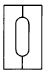
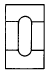
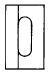
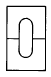
(정답률: 77%)

2. 프레스로 굽힘 작업할 때 주의사항 중 틀린 것은?
- 윤활유를 적당히 사용한다.
- 볼트나 지그로 잘 고정시켜 작업한다.
- 상형과 하형과의 간격을 가공물 두께에 맞추어 조정한다.
- 왼손은 하형을 누르고 오른손은 가공물을 자유롭게 밀어넣어 작업능률을 올린다.
(정답률: 94%)
3. 제품 치수가 h=20 mm, d=50 mm, t=1 mm일 때 블랭크의 직경은?
- 92mm
- 80.6mm
- 100mm
- 78mm
(정답률: 50%)
4. 순차이송 금형에서 게이트의 역할은?
- 제품 치수 결정
- 제품 정밀도 결정
- 소재 이송거리 결정
- 소재 위치 결정
(정답률: 75%)
5. 플랜지가 달린 원통드로잉을 하였더니 펀치 각 반지름 부분에 균열이 발생하였다. 이에 대한 대책으로 적합하지 않는 것은?
- 다이각 반지름을 작게한다.
- 펀치각 반지름을 약간 크게 한다.
- 블랭크 홀딩력을 작게한다.
- 윤활 특성이 좋은 윤활제를 사용한다.
(정답률: 54%)
6. 다음 중에서 굽힘, 성형, 드로잉 작업을 할 수 있을 뿐아니라 단조작업에 적합한 프레스는?
- 캠 프레스
- 마찰 프레스
- 너클 프레스
- 크랭크 프레스
(정답률: 54%)
7. 총기에 사용되는 탄피를 제작하려고 한다. 다음중 가장 적절한 가공법은?
- 압출가공
- 단조가공
- 블랭킹가공
- 전조가공
(정답률: 78%)
8. 다음 프레스 가공의 분류 중 굽힘 가공에 속하지 않는 것은?
- 비딩
- 시밍
- 컬링
- 트리밍
(정답률: 70%)
9. 다음 중 열간가공의 장점이 아닌 것은?
- 결정입자의 미세화
- 방향성 있는 주조 조직의 제거
- 합금원소의 확산으로 인한 재질의 불균일화
- 연신율, 단면수축률, 충격치등 기계적 성질의 개선
(정답률: 83%)
10. 프레스금형에서 펀치와 다이의 위치를 정확히 유지하여 금형의 정도와 생산성을 향상시키며 수명을 연장시키는 금형 부품은?
- 다이 홀더
- 다이 세트
- 펀치 플레이트
- 배킹 플레이트
(정답률: 59%)
11. 플라스틱 사출성형품에서 구멍과 구멍사이를 최소 어느정도 주는 것이 가장 적당한가? (단, D는 구멍의 내경이다.)
- 0.1D 이상
- 0.5D 이상
- 2D 이상
- 5D 이상
(정답률: 68%)
12. 사출 성형한 제품에 생긴 변형 및 휨 현상의 방지 대책으로 잘못된 것은?
- 형상을 대칭으로 하고 살두께를 균일하게 한다.
- 금형의 온도를 낮게 한다.
- 충전(성형)속도를 빠르게 한다.
- 게이트를 크게 한다.
(정답률: 47%)
13. 다음은 게이트(gate)의 크기에 대하여 설명하였다. 맞지 않는 것은?
- 충전시간은 게이트가 클수록 유리하고 게이트 봉입(gate seal)시간은 작을수록 유리하다.
- 잔류응력, 변형, 휨에 관해서는 게이트가 작은 쪽이 유리하다.
- 마무리작업을 고려하면 게이트가 작은쪽이 유리하다.
- 싱크마크, 높은 치수정밀도 대책에는 게이트가 작은 쪽이 유리하다.
(정답률: 51%)
14. 사출금형설치에서 금형 취부판의 설치 방법으로 옳은 것은?
- 클램프 플레이트는 접촉 면적이 큰 것이 좋다.
- 변형이나 비틀림 방지를 위한 클램프의 수는 2개면 충분하다.
- 볼트의 취부 위치는 클램프의 중앙부 보다 가장자리가 가장 좋다.
- 클램프 고정 위치는 수직방향 보다 수평방향을 사용하는 편이 안전하다.
(정답률: 49%)
15. 최근 플라스틱 금형의 일반적인 동향이 아닌 것은?
- 대형화
- 정밀화
- 소형화
- 자동화
(정답률: 58%)
16. 수지의 유동성에 대하여 틀린 것은?
- 용융수지의 온도가 높아지면 유동성이 감소한다.
- 사출압력이 증가하면 흐름의 길이는 증가한다.
- 금형의 온도가 증가함에 따라 흐름길이는 약간 증가한다.
- 유동성이 길면 성형품 생산량이 많아진다.
(정답률: 72%)
17. 다음은 금형의 구조설계시 검토 되어야 할 사항 들이다. 거리가 먼 것은?
- 캐비티수 배열의 결정
- 파팅라인, 러너, 게이트의 결정
- 언더컷 처리와 이젝팅 방법의 결정
- 생산제품의 견적서 작성
(정답률: 82%)
18. 다음 중 일반적인 사출 성형기의 부품은?
- 타이바 (Tie Bar)
- 스페이서 블록 (Spacer Block)
- 서포오트 핀 (Support pin)
- 이젝터 핀 (Ejector pin)
(정답률: 47%)
19. 다음중 러너의 단면 형상으로 쓰이지 않는 것은?
- 사다리꼴형
- 사각형
- 삼각형
- 원형
(정답률: 65%)
20. 이젝터(ejector) 핀이 작동하도록 공간을 만들어 주는 부품은?
- 스페이서 블록
- 상, 하 이젝터 플레이트
- 스톱 핀
- 받침판
(정답률: 75%)
2과목: 임의구분
21. 프레스 작업시 안전 수칙 중 틀린 것은?
- 발판 밑에는 재료나 제품을 두지 않아야 한다.
- 형틀에는 손이 닿지 않도록 하고 작업한다.
- 두꺼운 판 절단시는 손으로 힘주어 잡는다.
- 작업전에는 공회전을 하면서 클러치를 조작해 본다.
(정답률: 87%)
22. 정보처리회로에서 서보기구로 보내는 신호의 형태는 다음중 어느 것인가?
- 전압
- 전류
- 펄스
- 주파수
(정답률: 66%)
23. 부드럽고 탄성이 있는 엔지니어링 수지이며 롤러, 벨트, 완충용 패드, 엘리베이터용 가이드등에 사용되는 수지는?
- 폴리스틸렌
- 폴리우레탄
- 폴리아미드
- 폴리아세탈
(정답률: 64%)
24. 프레스 작업 중 안전에 가장 중요한 것은?
- 클러치의 점검
- 다이의 점검
- 펀치의 점검
- 동력의 점검
(정답률: 69%)
25. 수나사의 외경이 12㎜이고 피치가 1.5㎜인 미터계 암나사를 가공하기 위하여 사용하는 드릴직경은?
- 9.5㎜
- 11㎜
- 10.5㎜
- 10.0㎜
(정답률: 87%)
26. 일반적으로 올바른 안전 작업의 태도로 볼 수 없는 것은?
- 기계나 기구를 용도에 꼭 맞게 사용하여야 한다.
- 작업 방법을 개선하고 양질의 제품을 생산할 수 있도록 노력한다.
- 작업장의 청결을 유지하기 위하여 최선을 다한다.
- 동료의 안전보다 자신의 안전이 최우선이다.
(정답률: 88%)
27. 복잡한 형태의 금형을 제작할 때 사용할 모델을 제작 하기 위한 모델로서 원형 또는 마스터(master)라고도 하는 모델은?
- 검토 모델
- 제시 모델
- 기초 모델
- 모방 모델
(정답률: 63%)
28. 금형가공용 공구로 작업시 안전으로 틀린 것은?
- 핸드드릴 작업시 무리한 힘을 가하지 않는다.
- 정밀한 핸드그라인더 작업은 보안경을 착용하지 않아도 무방하다.
- 사포를 이용하여 금형의 표면을 연마할 때 무리한 힘을 주지 않는다.
- 금형을 다듬질할 때 줄이 파손되어 손을 다치지 않도록 한다.
(정답률: 89%)
29. 주조작업을 할 때 발생하는 재해 중 재해빈도가 가장 작은 것은?
- 타박상
- 진폐
- 중독
- 화상
(정답률: 65%)
30. 마텐자이트(martensite)조직을 만드는 열처리는?
- 담금질
- 뜨임
- 풀림
- 불림
(정답률: 67%)
31. 다음중 나사의 원리를 이용한 측정기는?
- 버니어 캘리퍼스
- 마이크로미터
- 한계게이지
- 다이얼 게이지
(정답률: 73%)
32. 절삭할 공작물의 단면 형상과 같은 윤곽의 절인을 가진 밀링 커터는?
- 플라이 커터
- 정면 밀링커터
- 앤드밀
- 총형 밀링커터
(정답률: 66%)
33. 한 개 또는 두 개 이상의 공작물을 정확한 위치에 결정하고 고정하는 기구는?
- 고정구
- 바이스
- 측정기구
- 부시
(정답률: 62%)
34. 금형을 가공하기 위하여 드릴작업을 시작하려고 한다. 다음 중 착용해서는 안되는 장비는?
- 안전모
- 안전화
- 작업복
- 장갑
(정답률: 86%)
35. 숏 피닝 작업에 대한 설명과 관계가 없는 것은?
- 금속의 표면 경도를 증가시킨다.
- 피로 한도를 높여준다.
- 강구를 표면에 때린다.
- 표면을 절삭한다.
(정답률: 58%)
36. 바깥지름 126, 잇수 40인 스퍼기어의 모듈은?(오류 신고가 접수된 문제입니다. 반드시 정답과 해설을 확인하시기 바랍니다.)
- 6
- 3.15
- 2.5
- 3
(정답률: 38%)
37. 다음 중 응력집중이 일어나지 않는 재료는?
- 단이 달린축
- 단이 안달린 축
- 구멍이 있는 축
- 노치가 있는 축
(정답률: 64%)
38. 탄소강 중에 보통 0.2-0.8% 함유시키며 용융금속의 유동성을 좋게하여 주조를 용이하고 황(S)의 해를 감소 시키는 성분은?
- 망간
- 규소
- 구리
- 인
(정답률: 50%)
39. 축이음 설계시 고려사항이 아닌 것은?
- 충분한 강도가 있을 것
- 진동에 강할 것
- 비틀림각의 제한을 받지 않을 것
- 부식, 열응력 등에 강할 것
(정답률: 81%)
40. 키와 키 홈 등이 모두 가공하기 쉽고, 키와 보스를 결합하는 과정에서 자동적으로 키가 자리를 잡을 수 있는 장점이 있으며 자동차, 공작기계 등에 널리 사용되는 키는?
- 성크 키
- 접선 키
- 반달 키
- 스플라인
(정답률: 45%)
3과목: 임의구분
41. 충격에 의한 에너지를 일시적으로 완화시키는 완충장치에 대한 설명이다. 다음 설명 중 틀린 것은?
- 고무 유압식과 스프링 유압식 등이 있으며 고무 유압식이 완충작용이 더 크다.
- 마찰 저항에 의한 비틀림 진동에너지를 열로 바꾸어 진동을 감쇠할 수 있다.
- 댐퍼 등을 이용하여 완충 역할을 할 수 있다.
- 불균형한 물체에는 무게 중심추를 이용하여 균형을 잡아준다.
(정답률: 59%)
42. 재료에 상온에서 하중을 가할 때 하중이 일정하더라도 고온이 되면 시간이 경과함에 따라 변형률이 증가하는 현상을 무엇이라 하는가?
- 열응력
- 피로한도
- 탄성계수
- 크리이프
(정답률: 56%)
43. 수나사의 크기는 무엇으로 표시하는가?
- 골 지름
- 안 지름
- 바깥지름
- 유효 지름
(정답률: 78%)
44. 표면이 우수한 제품을 생산하는 사출금형 제작용 재료 구비 조건으로 옳은 것은?
- 고강도 재료이어야 한다.
- 고경도 재료이어야 한다.
- 초소성 재료이어야 한다.
- 표면 광택성 재료이어야 한다.
(정답률: 64%)
45. 압축코일스프링에서 스프링 코일 평균직경을 [D], 소선의 직경을 [d]라 할 때 스프링지수[C] 관계식은?
- D × d
- D ÷ d
- 2D × d
- D ÷ 2d
(정답률: 58%)
46. 황동의 가공재를 상온에서 방치하거나 저온 풀림 경화시킨 스프링재가 사용도중 시간의 경과에 따라 경도등 스프링 특성을 잃는 현상을 무엇이라고 하는가?
- 탈아연부식
- 자연균열
- 경년변화
- 고온탈아연
(정답률: 63%)
47. 광통신에 사용되는 광섬유의 주재료는?
- 탄소(C)
- 티탄(Ti)
- 니오브(Nb)
- 규산유리(SiO2)
(정답률: 56%)
48. 유압식과 공기압식이 있으며, 차량의 브레이크 등에 함께 사용하여 충격을 완화시키는 동시에 작용시간에 여유를 가지게 하는데 사용하는 완충장치는?
- 대시 포트
- 토션 바
- 압축코일 스프링
- 판 스프링
(정답률: 48%)
49. 다음중 강의 5대원소에 속하지 않는 것은?
- 황(S)
- 마그네슘(Mg)
- 탄소(C)
- 규소(Si)
(정답률: 80%)
50. 자동차의 스티어링 장치, 수치제어 공작기계의 공구대, 이송장치 등에 사용되는 나사의 종류는?
- 둥근나사
- 볼나사
- 유니파이나사
- 미터나사
(정답률: 71%)
51. 기계제도에서 불규칙한 파형의 가는 실선을 사용하는 선은?
- 중심선
- 파단선
- 무게 중심선
- 기어 피치선
(정답률: 86%)
52. 다음 입체도와 같은 형상을 그린 평면도에서의 표시 단면을 무엇이라 하는가?
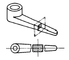
- 회전단면
- 방사단면
- 계단단면
- 부분단면
(정답률: 65%)
53. 다음 중 원통도를 나타내는 형상 기호는?
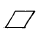
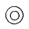
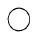
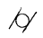
(정답률: 79%)
54. 그림과 같은 베어링 간략도의 구름 베어링의 명칭은?
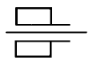
- 원통 롤러 베어링
- 깊은 홈 볼 베어링
- 원뿔 롤러 베어링
- 자동조심 볼 베어링
(정답률: 77%)
55. 보기 등각도를 3각법으로 투상한 도면 중 잘못된 것은?
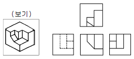
- 정면도
- 우측면도
- 평면도
- 좌측면도
(정답률: 83%)
56. 도면의 양식 중 반드시 갖추어야할 사항은?
- 비교 눈금
- 도면의 구역
- 재단 마크
- 중심 마크
(정답률: 81%)
57. 테이퍼 핀(taper pin)의 호칭 지름은?
- 테이퍼 핀의 작은 지름
- 테이퍼 핀의 큰 지름
- 테이퍼 핀의 평균 지름
- 테이퍼 핀의 적용 구멍 지름
(정답률: 65%)
58. 구멍 기준 H7m6의 끼워 맞춤은?
- 헐거움 끼워 맞춤
- 중간 끼워 맞춤
- 억지 끼워 맞춤
- 최대 틈새
(정답률: 60%)
59. 다음 그림의 도면에서 A부에 기입하는 내용은 무엇인가?
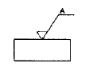
- 가공방법
- 산술 평균거칠기 값
- 컷오프 값
- 결 무늬 모양
(정답률: 77%)
60. 다음은 각각 다른 물체들을 제 3각법으로 그린 정투상도이다. 3면도가 모두 올바르게 투상한 것은?
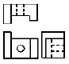
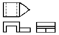
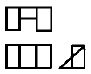
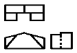
(정답률: 56%)
이유는 다이분할 방법 중에서는 최대한 많은 부분이 동일한 크기로 나누어지는 것이 좋습니다. "" 방법은 가장 많은 부분이 동일한 크기로 나누어지기 때문에 가장 양호한 방법입니다. 다른 방법들은 일부분이 크거나 작아서 낭비되는 부분이 있습니다.